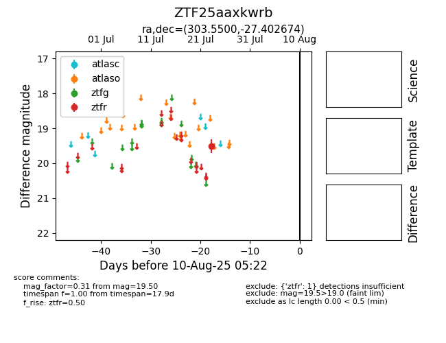

Target ZTF25aaxkwrb at 2025-08-19 09:59, see:
FINK: fink-portal.org/ZTF25aaxkwrb
Lasair: lasair-ztf.lsst.ac.uk/objects/ZTF25aaxkwrb
ALeRCE: alerce.online/object/ZTF25aaxkwrb
alt names
ZTF25aaxkwrb (ztf,fink)
coordinates:
equatorial (ra, dec) = (303.5500,-27.40267)
galactic (l, b) = (15.1367,-29.27680)
photometry
last ztfr=19.75
2 ztfr detections
